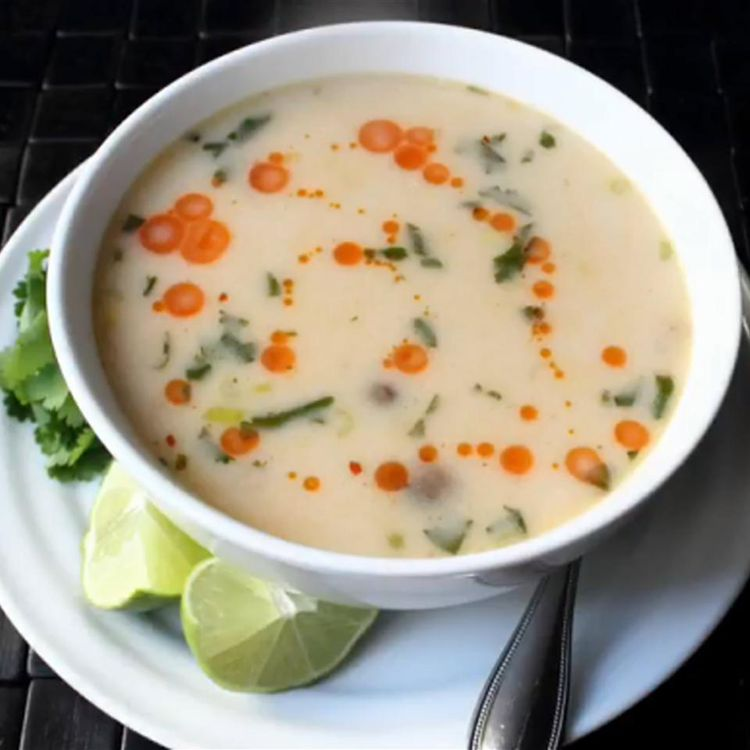

Turkey Tom Kha Gai

One of the great blessings, and curses, of Thanksgiving is leftover turkey. That's where this spicy Thai coconut soup recipe comes in. This is my take on Tom Kha Gai, and as usual I make no claim as to its authenticity. I do know it tastes amazing and will make you forget you even roasted a turkey. Garnish with chili oil, cilantro leaves, and lime wedges.
Ingredients
- 6 cups turkey broth
- 2 stalks lemongrass, bruised and sliced
- 1 (3 inch) piece fresh ginger, sliced
- 2 tablespoons chopped fresh cilantro stems
- 2 makrut lime leaves, thinly sliced
- ½ teaspoon red pepper flakes, or more to taste
- 1 pound cooked turkey, cut into small cubes
- 1 cup clamshell mushrooms, separated
- 2 tablespoons fish sauce
- 2 teaspoons palm sugar
- 1 (13 ounce) can coconut milk
- ¼ cup lime juice
- ¼ cup green onions, chopped
- 2 tablespoons chopped fresh cilantro leaves
- ¼ teaspoon chili oil, or more to taste
Steps
- Combine turkey broth, lemongrass, ginger, cilantro stems, lime leaves, and red pepper flakes in a pot over medium-high heat. Bring to a simmer, reduce heat to medium-low, and simmer until flavors blend, 20 to 30 minutes.
- Stain broth mixture through a fine-mesh sieve, discard vegetables, and return broth to the pot.
- Stir turkey, mushrooms, fish sauce, and palm sugar into broth; simmer until mushrooms are tender and turkey absorbs broth flavor, about 15 minutes.
- Pour coconut milk, lime juice, green onions, and cilantro leaves into broth. Bring soup to a simmer and drizzle in chili oil.